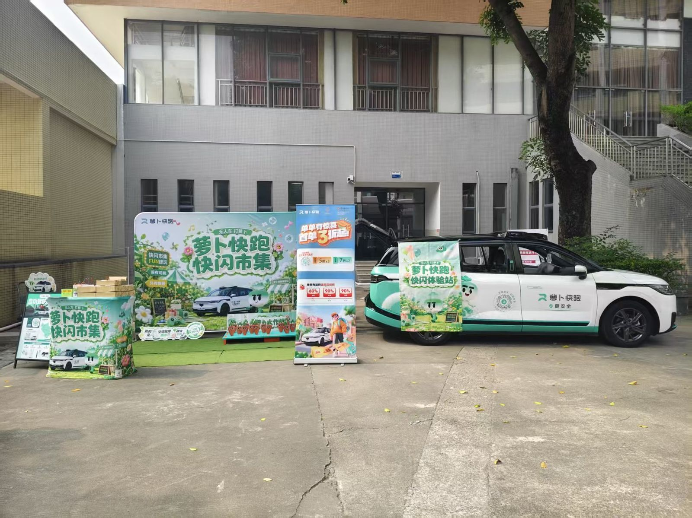
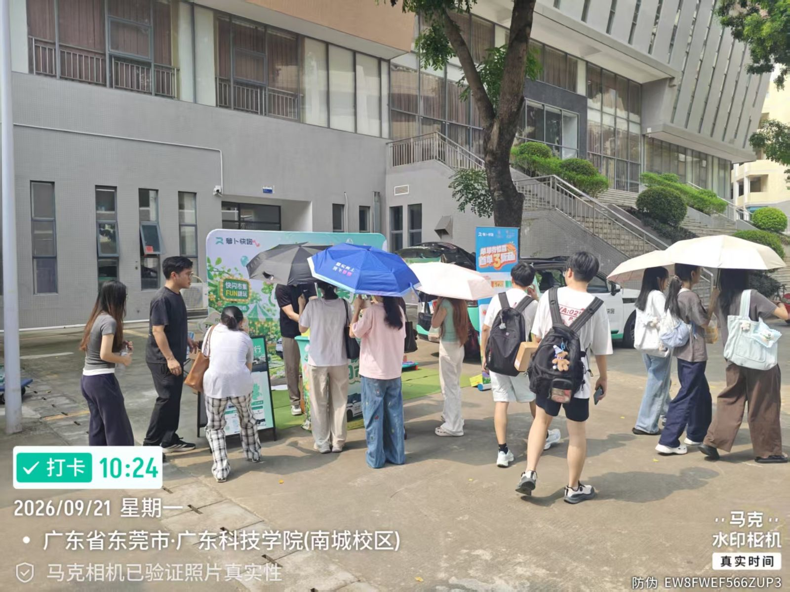
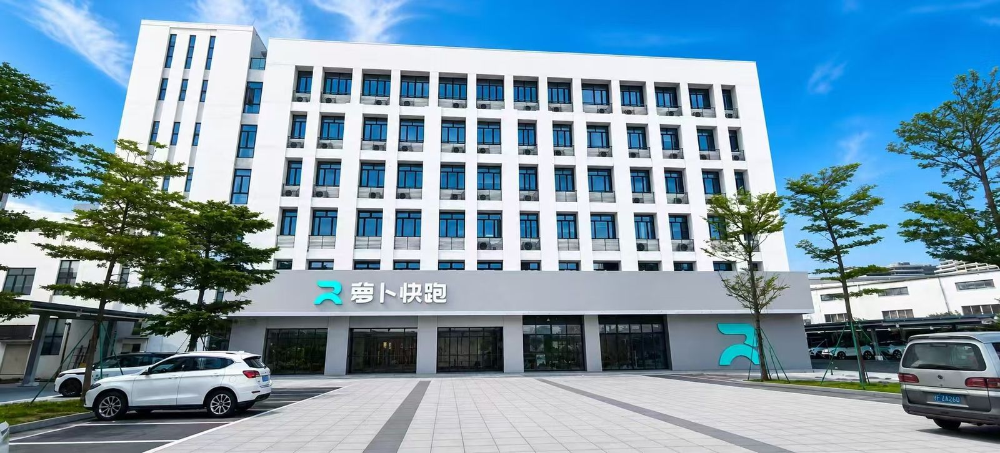
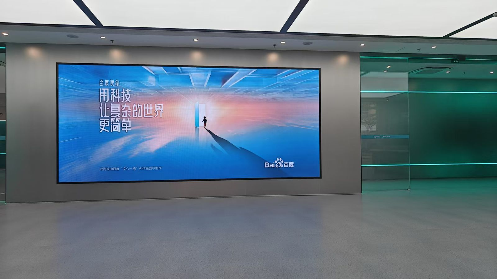

萝卜快跑 × 广科「开学季送清凉」：一场以公益切入的校企合作品牌活动
一、背景：一家自动驾驶公司，为什么愿意进校园
这次的合作方是萝卜运力（东莞）科技有限公司（萝卜快跑）。合作提案里的定位很清楚：自动驾驶是新质生产力的重要发展方向，萝卜快跑深耕东莞的自动驾驶落地应用，重视青年科技人才培育；而广东科技学院坚持产教融合，聚焦智能制造、人工智能等领域，为本地科创产业输送应用型人才——双方在「人才」这个点上天然互补。
但进校园的切入点选得非常聪明：不是硬广，而是公益赞助。开学季正值新生军训，参训师生在高温环境下训练，防暑降温保障是刚需。萝卜快跑以「军训送清凉」公益赞助切入，为参训新生及教官提供防暑物资，同时顺势开展自动驾驶知识科普，分享行业前沿技术与实际应用——公益给温度，科普给内容，品牌给记忆点。
二、5×6 米场地怎么搭出一个科技品牌的「可拍性」
场地规格是 5×6 米的送清凉主题场地，物料三件套各有分工：
- 主视觉背板：「萝卜快跑快闪市集」绿色系 KV，清爽感跟「送清凉」主题完全咬合；
- 萝卜快跑体验车：整车品牌涂装直接开到摊位旁，车身上挂着「萝卜快跑快闪体验站」旗帜——它本身就是最强打卡点，也是「自动驾驶」这个抽象概念的实体化；
- 优惠立牌与周边礼品堆头：新客立减扫码引导 + 周边礼品，负责把围观的目光接住、转化成动作。
我做校企对接和现场执行时有一个很深的体会：科技品牌做校园活动，「可拍性」比「讲解」更重要。学生可能记不住自动驾驶的技术参数，但会为了绿色的萝卜快跑主题车拍照、为了领一份防暑礼包驻足——视觉资产先工作，科普才有听众。

三、踩准军训节奏：人流波峰是「排」出来的
跟王老吉那场一样，军训期间的迷彩人流是校内最稳定的流量波峰。送清凉的公益属性让「被服务感」替代了「被推销感」——新生来领防暑物资不设消费门槛，扫码立减和周边礼品是给愿意多了解一步的人准备的，两层动作分开，参与率明显更好。

四、超预期的部分：品牌方主动提出「下次还要来」
活动结束三天后，萝卜快跑的对接负责人主动发来反馈——对一个校园活动的执行方来说，这大概是比任何数据都直接的肯定：
「孔同学好，我们上次的活动看了一下，新生反响还是不错的。后续咱们这边有什么学校类的大型活动，都可以提前跟我们通知，如果有需要的话，我们也会积极参与。比如说社团招新啊，音乐会啊，运动会什么的，这些类似的活动们都可以参与。」——萝卜快跑对接负责人，2026.09.24
这段话有两个信号值得拆开看：第一，效果通过验收——「新生反响不错」是品牌方自己下场观察后的结论，不是我们汇报出来的；第二，合作从「单次活动」升级成了「长期意向」——对方主动圈定了社团招新、音乐会、运动会三类后续场景，等于给了下一阶段的合作菜单。我回复确认后，双方就后续「萝卜快跑进校」保持沟通。
五、走进萝卜快跑：从一次送清凉，到校企合作的想象空间
借这次合作我也实地了解了萝卜快跑在东莞的布局：松山湖区域是自动驾驶的落地运营区域之一，而这家公司的本体是萝卜运力（东莞）科技有限公司——百度 Apollo 体系在东莞的自动驾驶运营主体。


这正是这次合作最值得记的一笔：送清凉只是一扇门，门后面是产教融合的想象空间——科普讲座、智能出行主题的参访实践、校园场景的自动驾驶体验活动，都在双方后续的合作菜单上。对一个学市场的学生来说，能在三、四年级就完整走一遍「提案—赞助—执行—验收—续约意向」的校企合作链路，比单场活动的热闹珍贵得多。
六、复盘
公益切入让品牌带着温度进场，参与零门槛；「公益物资 + 扫码立减」两层动作分离，照顾了不同意愿的人群；品牌体验车作为视觉锚点，让摊位在校园里天然可拍、可传播；执行完当天同步整理现场素材反馈品牌方，为后续续约埋了线。
自动驾驶科普环节的物料偏说明性，互动形式可以更游戏化（比如答题抽奖）；单日单场的规模有限，如果联动军训结营节点做多日轮换，曝光效率会更高；后续合作场景（社团招新/音乐会/运动会）需要提前一个学期排进校内活动日历，才来得及报批。
方法论沉淀
校企合作的公式：公益切入点 × 品牌视觉锚点 × 执行后的关系运营。活动的结束不是终点——素材反馈、效果确认、主动提出下一轮场景，把一次「赞助」变成一条「合作管线」，这才是校园活动执行者的长期价值。上一篇 · 品牌活动王老吉 × 嘉士利开学季校园活动复盘：265 场快闪的现场执行 →